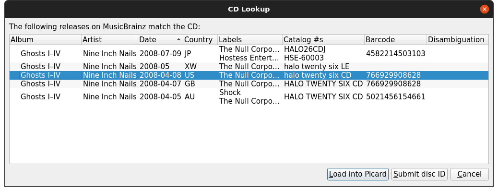

Lorsque le CD est disponible
C’est peut-être le meilleur scénario, car il offre les meilleures chances de marquer vos fichiers musicaux avec la correspondance la plus précise de la base de données MusicBrainz. C’est également l’une des méthodes les plus simples pour rechercher la version.
1. Ripper le CD en fichiers musicaux
Extrayez les fichiers musicaux du CD en utilisant votre programme d’extraction préféré (par exemple: Exact Audio Copy pour Windows, X Lossless Decoder (XLD) pour macOS, ou Whipper pour Linux). Le format des fichiers de sortie dépend de vos préférences personnelles et des formats pris en charge par votre lecteur. Un format populaire est FLAC, qui est un format compressé sans perte.
2. Recherchez le CD sur MusicBrainz
Avec le CD dans le lecteur, il peut être recherché automatiquement à l’aide de la commande . Voir la section CD de recherche pour des instructions détaillées.
3. Sélectionnez la version appropriée
Une liste de toutes les sorties correspondant au toc du CD sera affichée pour sélection, avec une option pour soumettre l’identifiant du disque si aucune des sorties ne correspond à votre CD. Avant de poursuivre, vérifiez que la version que vous sélectionnez correspond bien à votre CD (par exemple : pays de sortie, date et étiquette, numéro de catalogue, code-barres, type de support et couverture). Ceci est particulièrement important si vous avez l’intention de soumettre des informations telles que les caractéristiques acoustiques à AcousticBrainz ou les empreintes AcoustID.

{kind=link}
4. Chargez les fichiers
Faites glisser les fichiers ou le dossier du navigateur vers la section « Fichiers non groupés » dans le volet de gauche. Vous n’avez pas besoin de les analyser ou de les regrouper.
5. Faites correspondre les fichiers aux pistes de la version
Faites glisser les fichiers du volet de gauche et déposez-les sur la version dans le volet de droite. Vérifiez que chaque piste de la version est associée à un seul fichier. L’icône de libération devrait devenir dorée. Voir la section Mise en correspondance des fichiers aux pistes pour plus de détails.
6. Vérifiez les métadonnées et la pochette
Vérifiez que les métadonnées et l’image de la pochette de la version et des pistes correspondent à vos souhaits. Ajustez si nécessaire. Voir la section Définition de la pochette pour plus de détails.
7. Enregistrez les fichiers
Enregistrez les fichiers à l’aide de la commande . Voir la section Enregistrement des fichiers mis à jour pour plus de détails.
8. Calculer et soumettre les empreintes digitales AcoustID
Cette étape est facultative, mais appréciée car elle aidera à identifier les fichiers que d’autres pourront rechercher pour le marquage.
Sélectionnez l’entrée de l’album dans le volet de droite et calculez les empreintes AcoustID à l’aide de . Une fois les empreintes calculées, soumettez-les en utilisant .
Note
Les empreintes digitales AcoustID ne doivent être soumises qu’après que les fichiers ont été étiquetés avec les métadonnées MusicBrainz et que vous avez vérifié que les fichiers ont été mis en correspondance avec la bonne piste dans la version appropriée.